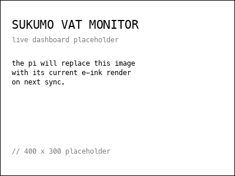

sukumo vat monitor
a fermenting indigo vat at bioclub tokyo, instrumented with a raspberry pi. an experiment in multispecies attention: temperature, surface activity, ph, orp, dissolved oxygen, all logged continuously. the pi runs offline at the lab and syncs to drive periodically when carried within reach of a network.
// dashboard
snapshot of the on-site e-ink display, refreshed when the pi syncs to drive. day count begins on vat fill (day 1).

// what's being measured
- temperature
- vat liquid temperature in °C. healthy sukumo sits around 25–30°C (Aino et al., 2018). read continuously from a DS18B20 probe at mid-depth.
- electrodes (surface / mid / bottom)
- voltage from carbon paper strips on the vat wall at three depths. shifts with the vat's chemistry. 4 at surface (N/S/E/W), 2 at mid (N/S), 2 at bottom (N/S). read continuously against a shared reference.
- pH
- acidity / alkalinity, manual reading. fermenting sukumo is strongly alkaline, typically pH 10.3–11 (Aino et al., 2018).
- ORP (oxidation-reduction potential)
- how chemically reducing the vat is, in millivolts. more negative = more reducing. manual reading.
- DO (dissolved oxygen)
- oxygen dissolved in the liquid, in mg/L. manual reading.
// surface activity
top-down view of the vat surface. the four markers are the surface electrodes (N, S, E, W). the speckled cloud summarises how the four readings differ from each other and from an hour ago. a calm vat reads as an empty circle; a wall reading differently appears as a denser cluster near that wall.
two signals drive the cloud:
-
per-electrode deviation. each electrode contributes a Gaussian kernel at its own position. the bigger its gap from the average of the four, the denser the kernel. opposite walls both deviating produce two distinct kernels.
density(p) += 4.5 · |v_k − mean(v)| · exp(− |p − pos_k|² / 2σ&sub1;²) where σ&sub1; ≈ 0.45 · r_inner
-
common-mode drift. when all four shift together, the average moves from its hour-ago value. that change adds a broad kernel at the center, for activity spread across the whole vat rather than at one wall.
density(p) += 3.5 · |mean(v) − mean_baseline| · exp(− |p − center|² / 2σ&sub2;²) where σ&sub2; ≈ 0.95 · r_inner
at each pixel the two are summed and used as the probability of placing a dot, capped at 55%. seeded from the current readings.
// orp target
the bar under the manual readings places the latest ORP between −700 and 0 mV. the tick marks −600 mV, cited as the industrial threshold for indigo reduction (Li et al., 2022). the pointer turns red above −550 mV.
// contribute
each interaction with the vat (manual reading, stir, feed, observation, creative session) gets one diary entry. anyone can submit anonymously.
submit an entry
30-second google form. for manual readings, take ph / orp / do from the whitebox first.
upload media
drop photos / audio / video into the incoming folder. an apps script renames them and files them under the day's archive folder.
taking a manual reading with the whitebox
- make sure the whitebox + arduino mega is plugged into the pi via usb.
- make sure the ph / orp / do probes are placed in the vat (or in calibration solution).
- wait 30 seconds for readings to stabilise.
- read the values from the connected device and type them into the form.
notes
- past entries can't be edited via the form. submit a new entry with corrected values; mention the correction in notes.
- the dashboard image and the pi's local diary update only when the pi next syncs (it spends most of its time offline at the lab). the sheet itself is always live.
// recipe
from 藍建講習会テキスト (足利の藍染 藍絽座, Kazama Yukizō, Ashikaga, Tochigi)
// 30L vat
ingredients
- 3 kg fermented indigo leaves (sukumo)
- 3 kg wood ash — burn the wood, then leave the ash to sit with water for 1 day (prepare the day before)
- 1 kg shell ash (same amount as wood ash)
- 100 g wheat bran
- lye made from wood ash, up to 5L (about 500g ash)
day 1 — up to 5L
- place 3 kg sukumo into the 30L jar.
- heat 5 L of lye (made from wood ash) to 80°C.
- pour the warm lye into the jar and stir vigorously with a wooden stick for 5 minutes.
- stir again in the evening. keep the mixture warm — temperature must stay above 30°C. if cold, use an electric blanket.
temperature control is critical at this stage.
day 2 — up to 14L
- repeat the day 1 process in the morning.
- carefully add more ash, making sure no air gets into the liquid.
- stir again in the evening.
day 3 — add 3L (total ~14L)
- heat 4 L of lye to about 35°C.
- carefully add the warmed lye to the jar.
- stir morning and evening, avoiding introducing air.
day 4
- stir morning and evening.
- check for flower (bloom). if visible, proceed to day 5.
day 5 — add remaining lye (total ~18L, then to ~28L)
- repeat the day 3 process.
- a rainbow-coloured film should appear on the surface. if not, stir again.
day 6 — up to 22L
- repeat the day 3 process.
- the rainbow-coloured film should still appear on the surface. if not visible, stir again.
day 7
- if the rainbow-coloured film is visible, add 100 g of bran and more ash to the pot.
- add enough ash to slightly cover the bran and cook over medium heat for about 30 minutes, stirring often to prevent burning.
- once the mixture cools to about 40°C, carefully add it to the indigo liquid, avoiding air.
- to adjust the pH to 11, gradually add more shell ash while stirring.
day 8
the indigo solution is now ready for use.
// care
- during dyeing, avoid letting too much air enter the solution — this weakens the microorganisms and prevents the dye from developing its colour.
- regularly check the pH. if too low, adjust by adding more shell ash.
- if colour still doesn't develop after adjusting pH: heat 500–1000 ml of lye and maltose in a saucepan until dissolved. allow to cool to ~40°C, then add to the indigo solution and stir.
- remove the bloom by hand before dyeing.
// build
working with the data in your own pieces (sound, visuals, anything).
- archive (public)
- daily csvs in the drive folder above — one file per day, with timestamp, temperature, 8 electrode voltages, and last manual ph / orp / do. full historical record, for analysis or rendering past data.
- live, on-site only
- when the pi is powered up at the lab it broadcasts OSC over UDP and serves a JSON snapshot on the local network. neither is reachable from outside the lab. for live performance / creative coding sessions in the room.
OSC address scheme (local network)
/sukumo/temperature <float °C> /sukumo/electrode/sfc_n <float V> /sukumo/electrode/sfc_s <float V> /sukumo/electrode/sfc_e <float V> /sukumo/electrode/sfc_w <float V> /sukumo/electrode/mid_n <float V> /sukumo/electrode/mid_s <float V> /sukumo/electrode/btm_n <float V> /sukumo/electrode/btm_s <float V> /sukumo/ph <float> /sukumo/orp <float mV> /sukumo/do <float mg/L>
port and JSON endpoint are configurable; ask in the lab. missing values send /sukumo/<key>/missing 1 instead of a number.